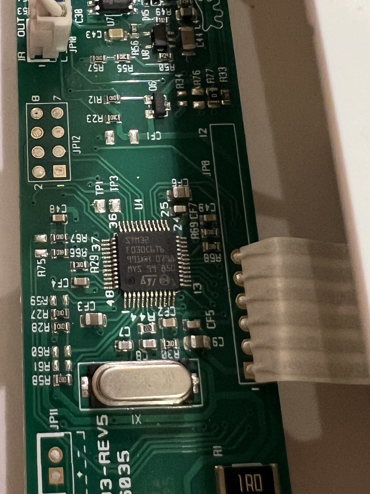
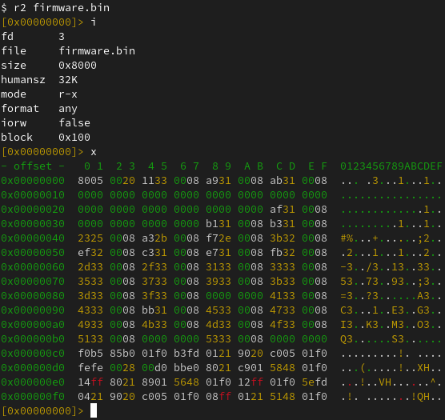
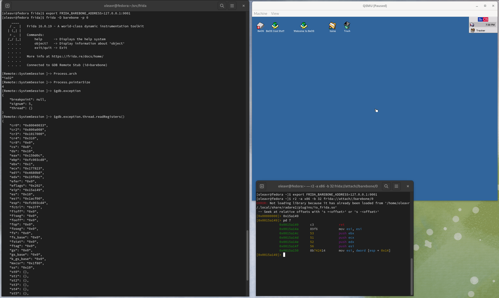

Frida 16.1.0 Released ∞
release oleavr
oleavr
For quite some years I’ve been dreaming of taking Frida beyond user-space software, to also support instrumenting OS kernels as well as barebone systems. Perhaps even microcontrollers…
Microcontrollers
Earlier this year my family’s cat door broke down. After some back and forth with the retailer, double-checking the installation and such, it would work for a little while before it eventually started malfunctioning.
This was obviously not much fun for our cats:
It’s also no surprise that they’d end up making a lot of noise, in turn making it hard to get a good night’s sleep when having to get up to let them back in manually.
I ended up buying a second cat door and, lo and behold, no more issues. The old one ended up collecting dust for a while. Something I kept thinking of was whether I could debug it, and perhaps even extend the software to do more useful things.
Feeling the urge to open it up to poke at the electronics inside of it, I eventually gave in:

That looked like an STM32F030C6T6, which is an ARM Cortex M0-based MCU. My first thought was whether I could dump the flash memory to do some static analysis.
After quickly skimming MCU docs, and a little bit of multimeter probing, I figured out the JP12 pads:
| PAD 1/2 | PAD 7/8 | ||
|---|---|---|---|
| BOOT0 | USART1 RX | SWDIO | GND |
| VDD | USART1 TX | SWCLK |
This made it easy to pull BOOT0 high, so the MCU boots into its internal bootloader instead of user code.
By hooking up a USB to 3.3V TTL device to the USART1 pads, I could dump the flash:
$ ./stm32flash -r firmware.bin /dev/ttyUSB0
stm32flash 0.7
http://stm32flash.sourceforge.net/
Interface serial_posix: 57600 8E1
Version : 0x31
Option 1 : 0x00
Option 2 : 0x00
Device ID : 0x0444 (STM32F03xx4/6)
- RAM : Up to 4KiB (2048b reserved by bootloader)
- Flash : Up to 32KiB (size first sector: 4x1024)
- Option bytes : 16b
- System memory : 3KiB
Memory read
Read address 0x08008000 (100.00%) Done.And perform some static analysis: 
Seeing as two of the other pads are connected to SWDIO and SWCLK, used for Serial Wire Debug (SWD), the natural next step was to hook up a Raspberry Pi Debug Probe to those. After getting that set up, I fired up OpenOCD:
$ openocd -f interface/cmsis-dap.cfg -f target/stm32f0x.cfg
Open On-Chip Debugger 0.11.0-g8e3c38f7-dirty (2023-05-05-14:25)
Licensed under GNU GPL v2
For bug reports, read
http://openocd.org/doc/doxygen/bugs.html
Info : auto-selecting first available session transport "swd". To override use 'transport select <transport>'.
Info : Listening on port 6666 for tcl connections
Info : Listening on port 4444 for telnet connections
Info : Using CMSIS-DAPv2 interface with VID:PID=0x2e8a:0x000c, serial=E6614103E78B482F
Info : CMSIS-DAP: SWD Supported
Info : CMSIS-DAP: FW Version = 2.0.0
Info : CMSIS-DAP: Interface Initialised (SWD)
Info : SWCLK/TCK = 0 SWDIO/TMS = 0 TDI = 0 TDO = 0 nTRST = 0 nRESET = 0
Info : CMSIS-DAP: Interface ready
Info : clock speed 1000 kHz
Info : SWD DPIDR 0x0bb11477
Info : stm32f0x.cpu: hardware has 4 breakpoints, 2 watchpoints
Info : starting gdb server for stm32f0x.cpu on 3333
Info : Listening on port 3333 for gdb connectionsThe idea I had been thinking about for a long time was to add a new Frida backend where the only process you can attach to is PID 0. Any scripts loaded there would actually be run locally, and implement the familiar JavaScript API. Any API that accesses memory, such as when dereferencing an int * by doing e.g. ptr(‘0x80000’).readInt(), would end up querying the target, through SWD in the above case.
I initially started sketching this where the backend would talk to the OpenOCD daemon through its telnet interface. But I quickly realized that it would be better to talk to its GDB-compatible remote stub. In this way, Frida will be able to instrument any target with an available remote stub. Whether that’s OpenOCD, Corellium (iOS kernel instrumentation!), QEMU, etc.
As for Interceptor, my thinking was that basic functionality would be implemented using breakpoints. But, only if the user supplies JavaScript callbacks. If function pointers are supplied instead, we could perform inline hooking so the target can run without any traps/ping-pongs with the host. This means it could even be used for observing and modifying hot code inside an OS kernel or MCU firmware.
After some initial sketching, I was able to run the following script:
Interceptor.breakpointKind = 'hard';
const THUMB_BIT = 1;
const initRest = ptr('0x0800306a').or(THUMB_BIT);
Interceptor.attach(initRest, {
onEnter(args) {
console.log('>>> init_rest()',
JSON.stringify(this.context, null, 2));
},
onLeave(retval) {
console.log(`<<< init_rest() retval=${retval}`);
}
});Using the Frida REPL:
$ frida -D barebone -p 0 -l demo.js
____
/ _ | Frida 16.1.0 - A world-class dynamic instrumentation toolkit
| (_| |
> _ | Commands:
/_/ |_| help -> Displays the help system
. . . . object? -> Display information about 'object'
. . . . exit/quit -> Exit
. . . .
. . . . More info at https://frida.re/docs/home/
. . . .
. . . . Connected to GDB Remote Stub (id=barebone)
[Remote::SystemSession ]-> $gdb.continue()
[Remote::SystemSession ]-> >>> init_rest() {
"r7": "0xffffffff",
"pc": "0x800306a",
"r8": "0xffffffff",
"xPSR": "0x41000000",
"r9": "0xffffffff",
"sp": "0x20000578",
"r0": "0x0",
"r10": "0xffffffff",
"lr": "0x8003069",
"r1": "0x40021008",
"r11": "0xffffffff",
"r2": "0xffffffff",
"r12": "0xffffffff",
"r3": "0xffffffff",
"r4": "0xffffffff",
"r5": "0xffffffff",
"r6": "0xffffffff"
}
<<< init_rest() retval=0x1A few things to note here:
- We set Interceptor.breakpointKind to hard, as our target’s code resides in flash, which means software-breakpoints won’t work. This would not have been necessary if I was using a J-Link or similar SWD interface, which transparently reflashes as software-breakpoints are added.
- The backend does not yet automatically resume, so we are doing that manually through $gdb.continue(), part of this internal API, which exposes most of GDB.Client to JavaScript. This is meant to become an internal implementation detail, but will be needed while this new backend matures – it should not yet be considered stable API.
- We set the least significant bit to indicate to Interceptor that the target function uses Thumb instruction encoding. This part may already be familiar to you if you have previously used Frida’s conventional backends on 32-bit ARM.
- The new Barebone backend connects to the GDB-compatible remote stub at 127.0.0.1:3333 by default. This matches what OpenOCD typically defaults to, but can be overridden by setting the FRIDA_BAREBONE_ADDRESS environment variable.
OS kernels
While my fun little cat door side-quest is a great test case for the tiny part of the spectrum, there’s also a lot of potential in supporting larger systems.
One of the cooler use-cases there is definitely Corellium, as it means we can instrument the iOS kernel. Using a Tamarin Cable it should even be possible to get this working on a checkm8-exploitable physical device.
Before we touch on that though, let’s see if we can get things going with QEMU and a live Linux kernel.
Linux
First, we’ll fire up a VM we can play with:
$ pip install arm_now
$ arm_now start aarch64 --add-qemu-options='-gdb tcp::9000'
...
Welcome to arm_now
buildroot login:Next, we’ll use the Frida REPL to look around:
$ export FRIDA_BAREBONE_ADDRESS=127.0.0.1:9000
$ frida -D barebone -p 0
____
/ _ | Frida 16.1.0 - A world-class dynamic instrumentation toolkit
| (_| |
> _ | Commands:
/_/ |_| help -> Displays the help system
. . . . object? -> Display information about 'object'
. . . . exit/quit -> Exit
. . . .
. . . . More info at https://frida.re/docs/home/
. . . .
. . . . Connected to GDB Remote Stub (id=barebone)
[Remote::SystemSession ]-> Process.arch
"arm64"
[Remote::SystemSession ]-> Process.enumerateRanges('r-x')
[
{
"base": "0xffffff8008080000",
"protection": "r-x",
"size": 4259840
}
]
[Remote::SystemSession ]-> $gdb.state
"stopped"
[Remote::SystemSession ]-> $gdb.exception
{
"breakpoint": null,
"signum": 2,
"thread": {}
}
[Remote::SystemSession ]-> $gdb.exception.thread.readRegisters()
{
"cpsr": 1610613189,
"pc": "0xffffff8008096648",
"sp": "0xffffff80085f3f10",
"x0": "0x0",
"x1": "0xffffff80085e6b78",
"x10": "0x880",
"x11": "0xffffffc00e877180",
"x12": "0x0",
"x13": "0xffffffc00ffe1f30",
"x14": "0x0",
"x15": "0xfffffff8",
"x16": "0xffffffbeff000000",
"x17": "0x0",
"x18": "0xffffffc00ffe17e0",
"x19": "0xffffff80085e0000",
"x2": "0x40079f5000",
"x20": "0xffffff80085f892c",
"x21": "0xffffff80085f88a0",
"x22": "0xffffff80085ffe80",
"x23": "0xffffff80085ffe80",
"x24": "0xffffff80085d5028",
"x25": "0x0",
"x26": "0x0",
"x27": "0x0",
"x28": "0x405a0018",
"x29": "0xffffff80085f3f10",
"x3": "0x30c",
"x30": "0xffffff800808492c",
"x4": "0x0",
"x5": "0x40079f5000",
"x6": "0x1",
"x7": "0x1c0",
"x8": "0x2",
"x9": "0xffffff80085f3e80"
}
[Remote::SystemSession ]->You might wonder how we’ve implemented Process.enumerateRanges(). This part is for now only implemented on arm64, and it is accomplished by parsing the page tables. (And if we’re talking to Corellium’s remote stub we use a vendor-specific monitor command to save ourselves a lot of network roundtrips.)
So now that we’re peeking into a running kernel, one of the things we might want to do is find internal functions and data structures. This is where the memory- scanning API comes handy:
for (const r of Process.enumerateRanges('r-x')) {
console.log(JSON.stringify(r, null, 2));
const matches = Memory.scanSync(r.base, r.size,
'7b2000f0 fa03082a 992480d2 : 1f00009f ffffffff 1f00e0ff');
console.log('Matches:', JSON.stringify(matches, null, 2));
}Here we’re looking for the Linux kernel’s arm64 syscall handler, matching on its first three instructions. We use the masking feature to mask out the immediates of the ADRP and MOV instructions (first and third instruction).
Let’s take it for a spin:
$ frida -D barebone -p 0 -l scan.js
____
/ _ | Frida 16.1.0 - A world-class dynamic instrumentation toolkit
| (_| |
> _ | Commands:
/_/ |_| help -> Displays the help system
. . . . object? -> Display information about 'object'
. . . . exit/quit -> Exit
. . . .
. . . . More info at https://frida.re/docs/home/
. . . .
. . . . Connected to GDB Remote Stub (id=barebone)
Attaching...
{
"base": "0xffffff8008080000",
"size": 4259840,
"protection": "r-x"
}
Matches: [
{
"address": "0xffffff8008082f00",
"size": 12
}
]
[Remote::SystemSession ]->So now we’ve dynamically detected the kernel’s internal syscall handler! 🚀
Re-implementing the memory scanning feature was one of the highlights for me personally, as @hsorbo and I had a lot of fun pair-programming on it. The implementation is conceptually very similar to what we’re doing in our Fruity backend for jailed iOS, and our new Linux injector: instead of transferring data to the host, and searching that, we can get away with transferring only the search algorithm, to run that on the target.
The memory scanner implementation is written in Rust, and helped prepare the groundwork for a new cool feature I’m going to cover a bit later in this post.
So, now that we know where the Linux kernel’s syscall handler is, we can use Interceptor to install an instruction-level hook:
const el0Svc = ptr('0xffffff8008082f00');
Interceptor.attach(el0Svc, function (args) {
const { context } = this;
const scno = context.x8.toUInt32();
console.log(`syscall! scno=${scno}`);
});And try that out on our running VM:
$ frida -D barebone -p 0 -l kernhook.js
____
/ _ | Frida 16.1.0 - A world-class dynamic instrumentation toolkit
| (_| |
> _ | Commands:
/_/ |_| help -> Displays the help system
. . . . object? -> Display information about 'object'
. . . . exit/quit -> Exit
. . . .
. . . . More info at https://frida.re/docs/home/
. . . .
. . . . Connected to GDB Remote Stub (id=barebone)
[Remote::SystemSession ]-> $gdb.continue()
[Remote::SystemSession ]-> syscall! scno=63
syscall! scno=64
syscall! scno=73
syscall! scno=63
syscall! scno=64
syscall! scno=73
syscall! scno=63
syscall! scno=64
syscall! scno=56
syscall! scno=62
syscall! scno=64
syscall! scno=57
syscall! scno=29
syscall! scno=134
...And that’s it – we are monitoring system calls across the entire system! 💥
Rust
One of the first things you’ll probably notice if you try the previous example is that we slow down the system quite a bit. This is because Interceptor uses breakpoints when a JavaScript function is specified as the callback.
Not to worry though. If we write our callback in machine code and pass a NativePointer instead, Interceptor will pick a different strategy: it will modify the target’s machine code to redirect execution to a trampoline, which in turn calls the function at the address that we specify.
So that’s great. We only need to get our machine code into memory. Some of you may be familiar with our CModule API. We don’t yet implement that one in this new Barebone backend (and we will, eventually!), but we have something even better. Enter RustModule:
const kernBase = ptr('0xffffff8008080000');
const procPidStatus = kernBase.add(0x15e600);
const m = new RustModule(`
#[no_mangle]
pub unsafe extern "C" fn hook(ic: &mut gum::InvocationContext) -> () {
let regs = &mut ic.cpu_context;
println!("proc_pid_status() was called with x0={:#x} x1={:#x}",
regs.x[0],
regs.x[1],
);
}
`);
Interceptor.attach(procPidStatus, m.hook);The RustModule implementation uses a local Rust toolchain, assumed to be on your PATH, to compile the code you provide it into a no_std self-contained ELF. It relocates this ELF and writes it into the target’s memory. As part of this it will also parse the MMU’s page tables and insert new entries there so the uploaded code becomes part of the virtual address space, where the pages are read/write/execute.
In this example we’re hooking proc_pid_status() in our live Linux kernel.
Note that File.readAllText() can be used to avoid having to inline Rust code inside your JavaScript. Here we’re using inline code for the sake of brevity.
Now, with our Rust-powered agent, let’s take it for a spin:
$ frida -D barebone -p 0 -l kernhook2.js
____
/ _ | Frida 16.1.0 - A world-class dynamic instrumentation toolkit
| (_| |
> _ | Commands:
/_/ |_| help -> Displays the help system
. . . . object? -> Display information about 'object'
. . . . exit/quit -> Exit
. . . .
. . . . More info at https://frida.re/docs/home/
. . . .
. . . . Connected to GDB Remote Stub (id=barebone)
Error: to enable this feature, set FRIDA_BAREBONE_HEAP_BASE to the physical base address to use, e.g. 0x48000000
at <eval> (/home/oleavr/src/demo/kernhook2.js:13)
at evaluate (native)
at <anonymous> (/frida/repl-2.js:1)
[Remote::SystemSession ]->Oops! That didn’t quite work. There is still one piece missing in our new backend: we don’t yet have any “kernel bridges” in place that automatically fingerprint the internals of known kernels in order to find a suitable internal memory allocator we can use. This will also be needed to implement APIs such as Process.enumerateModules(), which will allow listing the loaded kernel modules/kexts. We could also locate the kernel’s process list and implement enumerate_processes(), so frida-ps works. And those are only a couple of examples… How about injecting frida-gadget into a user-space process? That would be super-useful for an embedded system where we want to avoid modifying the flash. Anyway, I digress 😊
So, on MCUs and unknown kernels you will have to tell Frida where, in physical memory, we may clobber if you want to use intrusive features such as RustModule, Interceptor in its inline hooking mode, Memory.alloc(), etc.
With that in mind, let’s retry our example, but this time we’ll set the FRIDA_BAREBONE_HEAP_BASE environment variable:
$ export FRIDA_BAREBONE_HEAP_BASE=0x48000000
$ frida -D barebone -p 0 -l kernhook2.js
____
/ _ | Frida 16.1.0 - A world-class dynamic instrumentation toolkit
| (_| |
> _ | Commands:
/_/ |_| help -> Displays the help system
. . . . object? -> Display information about 'object'
. . . . exit/quit -> Exit
. . . .
. . . . More info at https://frida.re/docs/home/
. . . .
. . . . Connected to GDB Remote Stub (id=barebone)
[Remote::SystemSession ]-> m
{
"hook": "0xffffff80080103e0"
}
[Remote::SystemSession ]-> $gdb.continue()Yay! 🎉 So now, in the terminal where we have QEMU running, let’s try accessing /proc/$pid/status three times, so the hooked function gets called:
# head -3 /proc/self/status
Name: head
Umask: 0022
State: R (running)
# head -3 /proc/self/status
Name: head
Umask: 0022
State: R (running)
# head -3 /proc/self/status
Name: head
Umask: 0022
State: R (running)Over in our REPL, we should see our hook() getting hit three times:
proc_pid_status() was called with x0=0xffffffc00d4bca00 x1=0xffffff8008608758
proc_pid_status() was called with x0=0xffffffc00d4bc780 x1=0xffffff8008608758
proc_pid_status() was called with x0=0xffffffc00d4bc780 x1=0xffffff8008608758It works! 🥳
There’s one important thing to note though: In our example we’re using println!(), and this actually causes the target to hit a breakpoint, so the host can read out the message passed to it, and bubble that up just like a console.log() from JavaScript. This means you should only use this feature for temporary debugging purposes, and throttle how often it’s called if on a hot code-path.
The next thing you might want to do is pass external symbols into your RustModule. For example if you want to call internal kernel functions from your Rust code. This is accomplished by declaring them like this:
extern "C" {
fn frobnicate(data: *const u8, len: usize);
}Then when constructing the RustModule, pass it in through the second argument:
const m = new RustModule(source, {
frobnicate: ptr('0xffffff8008084320'),
});For those of you familiar with our CModule API, this part is exactly the same. You can also use NativeCallback to implement portions host-side, in JavaScript, but this needs to be handled with care to avoid performance bottlenecks. Going in the opposite direction there is also NativeFunction, which you can use to call into your Rust code from JavaScript.
Last but not least, you may also want to import existing Rust crates from crates.io. This is also supported:
const m = new RustModule(source, {}, {
dependencies: [
'cstr_core = { version = "0.2.6", default-features = false }',
]
});Corellium
What’s so exciting is that all of the Linux bits above all “just work” on Corellium as well. All you need to do is point FRIDA_BAREBONE_ADDRESS at the endpoint shown in Corellium’s UI under “Advanced Options” -> “gdb”.
Shout-out to the awesome folks at Corellium for their support while doing this. They even implemented new protocol features to improve interoperability 🔥
Future
This new backend should be considered alpha quality for now, but I think it’s already capable of so many useful things that it would be a shame to keep it sitting on a branch.
You may notice that the JS APIs implemented only cover a subset, and not all features are available on non-arm64 targets yet. But all of this will improve as the backend matures. (Pull-requests are super-welcome!)
And as a fun aside, here’s Frida attached to the BeOS kernel:

EOF
There’s also a bunch of other exciting changes, so definitely check out the changelog below.
Enjoy!
Changelog
- Add Barebone backend. (Covered extensively above.)
- objc: Handle modifiers. This makes type parsing more reliable, especially when dealing with ivars which often times have the “atomic” modifier: exceptions were thrown because the modifiers ended up being treated as unknown types. Thanks @mrmacete!
- android: Fix support for Android 14. Thanks @gsingh93! Also thanks @jayluxferro for contributing a follow-up fix for a mistake I made while merging @gsingh93’s PR.
- gum-graft: Add support for chained imports. Thanks @mrmacete!
- gumjs: Add NativePointer#readVolatile(), to provide a safe way to read from memory that may become unmapped or have its memory protection changed midway through. Thanks @hsorbo!
- darwin: Improve tvOS support to also cover frida-server. Thanks @tmm1!
- darwin: Plug memory leak in fallback kill() logic. Thanks @tmm1!
- fruity: Handle failure to fetch dyld symbols.
- compiler: Bump frida-compile to 16.2.2. Dependencies’ source maps are now also bundled – thanks @vfsfitvnm!
- compiler: Bump @types/frida-gum to 18.3.2, now with improved typings for hexdump().
- gdb: Add GDB.Client, by factoring out the guts of Fruity’s LLDB.Client, with many protocol enhancements and interoperability fixes added on top.
- elf-module: Improve API and make it cross-platform. Support loading from a blob, expose relocations, and improve overall robustness.
- capstone: Fix crash on x86 when building with MSVC.